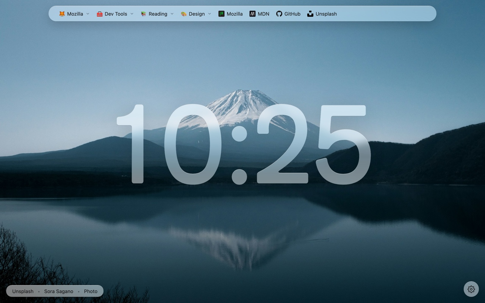
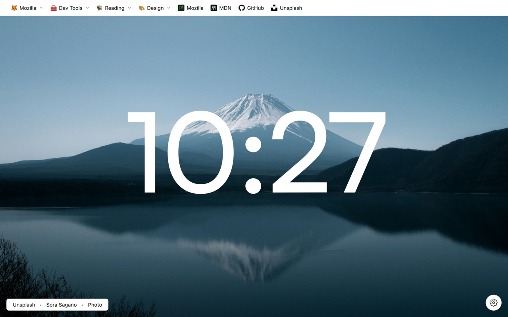
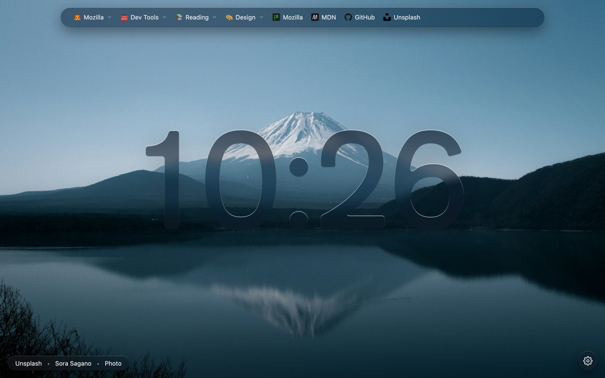
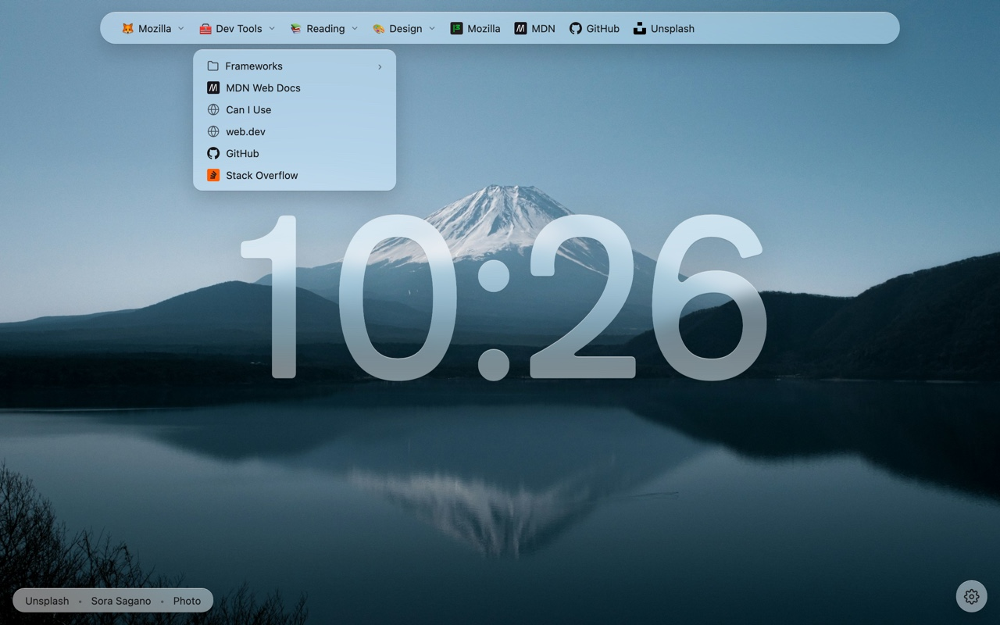
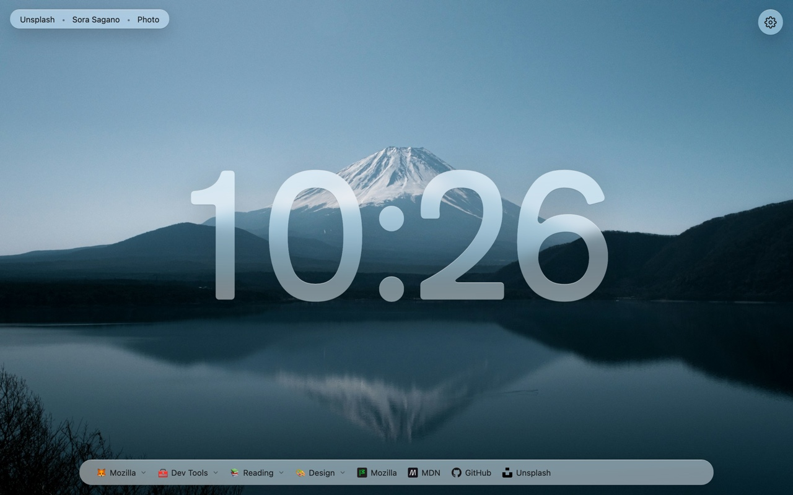

Bookmarks where you want them
Your toolbar appears as a clean pill at the top. Folders open as dropdowns; nested folders cascade as side menus.
Mr. Newtabby puts your bookmarks toolbar in a clean glass bar at the top of every new tab — over a curated wallpaper that refreshes itself. Minimal, fast, and out of your way.
Two ways to wear it
Pick the frosted-glass aesthetic with backdrop blur, or switch to Classic for solid surfaces and a bar that anchors flush to the top. Try the toggle in the bottom-right.


Everything, nothing more
Mr. Newtabby does a few things and does them well. No dashboards, no widgets you'll never use.
Your toolbar appears as a clean pill at the top. Folders open as dropdowns; nested folders cascade as side menus.
Every session loads a high-resolution photo from a curated Unsplash collection, sized to your display — up to 4K.
Follows your system theme, or pick one and stick with it. The glass adapts so text always stays readable.
English, Spanish, French, Italian, German, Japanese and Simplified Chinese — auto-detected from your browser.
No analytics, no trackers, no remote code. Your bookmarks never leave your device. The only request is to Unsplash.
Center or left-align the bar, give any top-level folder its own emoji icon, toggle the search field, and set a refresh interval — 1, 6, 12 or 24h.
See it in motion



Mr. Newtabby reads your bookmarks locally to draw the bar. There's no account, no sync server, no telemetry. The single outbound request fetches a wallpaper from Unsplash — and only when backgrounds are on.
Free, open source, and installed in two clicks.